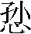

西谛先生：
下午晤璧兄[49]，知即以夜车北上。顷检《北平笺谱》，则所缺凡五叶，即：
第四本师曾花果笺（淳[50]）内缺黄蜀葵，
第五本俞明[51]人物笺（淳）内缺倚窗美人，
第六本吴澂[52]花卉笺（淳）内缺水仙，
又 缺紫玉簪，
又 二十幅梅花笺（静[53]）内缺一幅。
最前之四幅，前次见寄之样本中皆有之，可以拆下补入。惟梅花笺乞补寄，因不知所缺者为何人作，故别纸录所存之作者名备览。此上即颂
著安。
迅 顿首 一月二十九夜
所存梅花笺
一 桂浩度 二 萧

三 胡佩衡四 齐白石 五 马晋 六 石雪
七 杨葆益 八 与恬 九 屈兆麟
十 袁匋盦 十一 待秋 十二 观岱
十三 吴宁祁 十四 苍虬居士 十五 修髯
十六 退翁 十七 汤定之 十八 陈煦
十九 陈年
注 释
[49] 璧兄 指方璧，即沈雁冰。
[50] 淳 指北京琉璃厂的淳菁阁。
[51] 俞明（1884—1935） 号涤凡，浙江吴兴人，画家。
[52] 吴澂（1878—1949） 字待秋，浙江崇德人，画家。
[53] 静 指北京琉璃厂的静文斋。